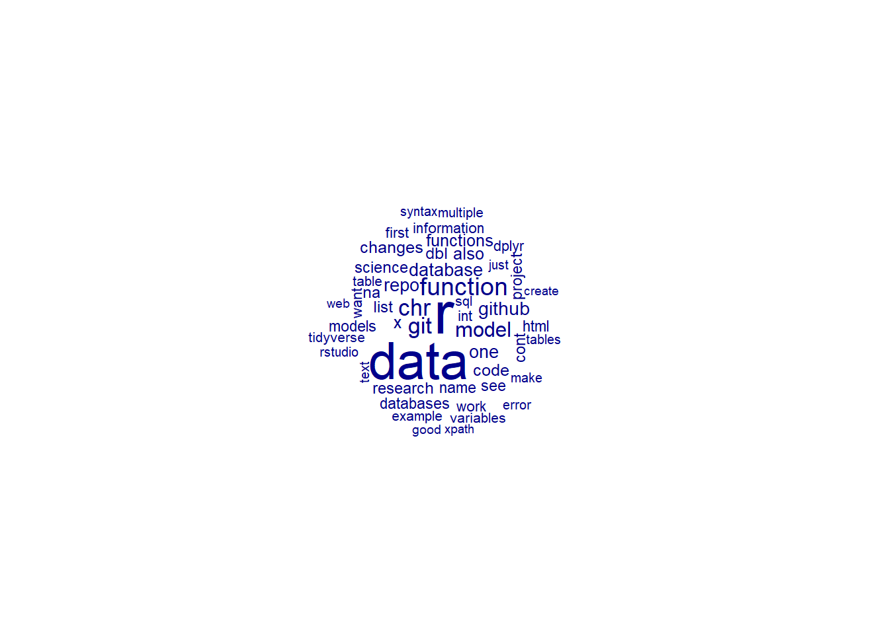
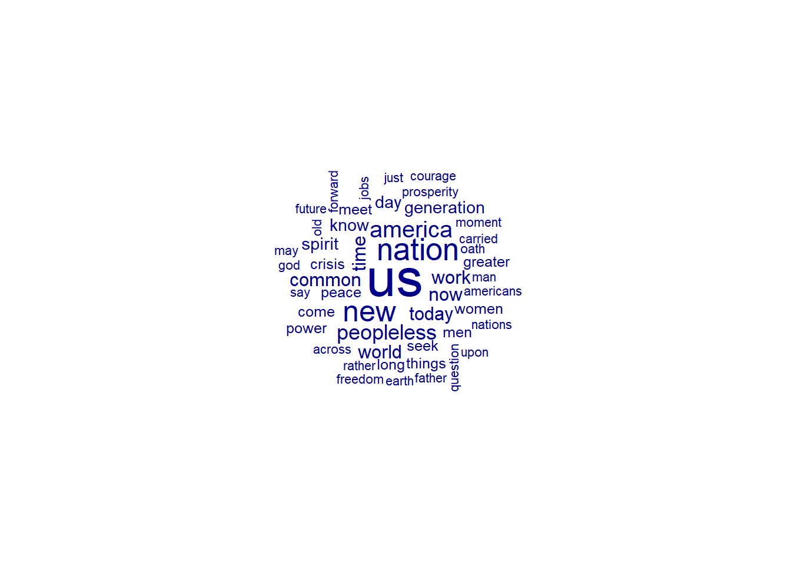
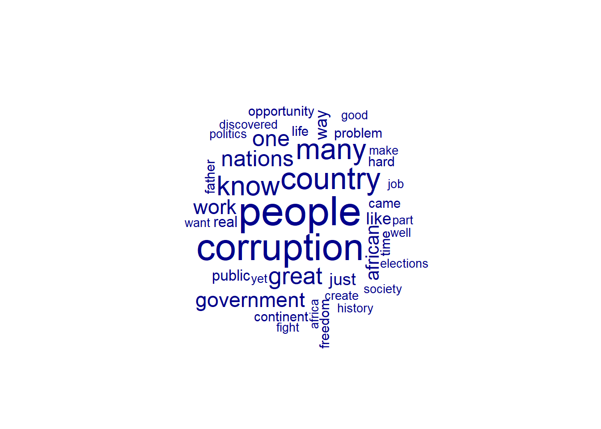

This Workshop introduces you to quanteda, an R package for quantitative text analysis.
Why do we want to analyze textual data? Text is everywhere, grows in volume and becomes more easily accessible as we speak. Main reasons for this are the widespread use of social media and the digitalisation of many aspects of our lives, making lots of data available for (social science) research. Natural language processing provides us with the fundamental tools and methods to analyse text data.
Natural Language Processing (NLP) is concerned with enabling computers/machines to process, understand, interpret and even generate natural language, for example in the form of text or speech. Some examples of applications using NLP are chatbots, tools for speech recognition, automatic text summarization or translation, such as Google Translate.
Quantitative text analysis is a subfield of NLP and refers to the process of analyzing text data using statistical and computational methods to derive quantitative information from the input text. Some examples of quantitative text analysis include word frequency analysis, keyword extraction, sentiment analysis, text visualization, and more. All of this can be done using the R package quanteda!
Some popular use cases of quantitative text analysis in social science research are: - The analysis of political speeches or party manifestos to identify key phrases - Social Media Listening - Categorization and quantification of open-ended survey responses. In order to illustrate the workflow and main functions of the quanteda package, we analyse speeches by Barack Obama which we previously scraped from http://obamaspeeches.com/.
There’s a great literature regarding discourse analysis of political speeches. For instance you can check at a very brief example from Sharififar, M., & Rahimi, E. (2015). Critical discourse analysis of political speeches: A case study of Obama’s and Rouhani’s speeches at UN. Theory and Practice in Language studies, 5(2), 343. https://www.academypublication.com/issues2/tpls/vol05/02/14.pdf
Our main goal is for you to learn the basic functions that will allow you to achieve this type of analysis in R!
Quanteda is an R packagae for managing and analysing textual data. It was created by Ken Benoit and is available via CRAN. The latest update of quanteda is version 4.0 and the package is maintained by the UK-based non-profit company Quanteda Initiative.
Since Version 3.0, quanteda has been split into modular packages. These consist of:
quanteda: - Contains all core natural language processing and textual data management functions
quanteda.textmodels: - Contains all text models and supporting functions - Textmodel_* functions
quanteda.textstats: - Statistics for textual data - textstat_*() functions
quanteda.textplots: - Plots for textual data - textplot_*() functions
Additionally available via GitHub:
quanteda.sentiment: - Sentiment analysis using dictionaries
quanteda.tidy: - Extensions for manipulating document variables in core quanteda objects using tidyverse functions
The quanteda workflow is structured around three main objects, these are
In quanteda, a corpus functions as the primary data structure for storing and organizing text data. The corpus stores
The corpus can be thought of as “library” or data frame that holds the textual data we want to analyse alongside specific document-level or metadata attributes, called docvars. Only by transforming our input text into a corpus format, quanteda is able to process it, therefore the corpus functions as starting point to our analysis.
In general, the corpus functions as relatively static library, meaning that text data in the corpus should not be changed through cleaning and preprocessing steps. Rather, texts can be extracted from the corpus for any manipulation and should be assigned to new objects. This way, the corpus functions as a copy of the original input data. Within the corpus, each document is typically represented as a separate element. Documents within a corpus can be accessed by their index or via docvars.
In quanteda, tokens represent the basic units of text data, that are used for any further analysis. They comprise usually of words that have been extracted and grouped as semantic units. Nonetheless, phrases or even entire sentences can be tokenized as well.
Tokenizing describes the process of splitting the input text into individual tokens. Once a text is tokenized, various operations for preprocessing, cleaning and feature extraction can be performed on those tokens.
How do tokens relate to the Corpus? When you tokenize text, you create a list of tokens for each document, and each document in the corpus is represented as a sequence of tokens. Thereby, tokens can be used for positional (string-of-words) analysis, which is used to examine, eg.: the position and relation of tokens within a corpus.
The document feature matrix puts documents into matrix format and constitutes the unit on which analyses will be performed. In the DFM, each row corresponds to a document and each column corresponds to a feature of that text, which are often tokens. The matrix stores the frequency of each feature (column) within each document (row). DFMs are particularly useful if not all parts of the documents in the corpus should be included in the analysis.Generally, DFMs are often sparse, meaning that many entries in the matrix are zero, making the DFM more memory- and computationally efficient.
How does the DFM relate to tokens? When you create DFM, the list of tokens is transformed into a structure matrix that functions as foundation for subsequent analysis. Tokens constitute individual elements of text data, while a DFM constitutes a structural and numerical representation of text data. As opposed to tokens, the DFM does not store information on the position of words within a given document. A DFM is therefore used to perform non-positional (bag-of-words) analysis, for example word frequency analysis,sentiment analysis, text classification, and more.
There are several advantages to using quanteda for quantitative text analysis!
…And now it’s time to try it yourself!
| # Workflow 💪 |
First we load the core of the quanteda package.
If any of the packages are not installed on your machine you can uncomment the first line.
## Package version: 3.3.1
## Unicode version: 13.0
## ICU version: 69.1## Parallel computing: 8 of 8 threads used.## See https://quanteda.io for tutorials and examples.As mentioned above, the quanteda package is split in to modular packages so we also download a selection of those of interest to us in this tutorial.
We also load readtext which makes the process of importing texts easier, and also imports meta data. Specifically in our case, it allows us to read in pdfs as text files. Other compatible input formats include .txt, .csv, .tab, .json, .doc and .docx files.
##
## Attaching package: 'readtext'## The following object is masked from 'package:quanteda':
##
## textsFinally we load dplyr for our workflow and gt for creating nice looking tables.
##
## Attaching package: 'dplyr'## The following objects are masked from 'package:stats':
##
## filter, lag## The following objects are masked from 'package:base':
##
## intersect, setdiff, setequal, unionFor the example in this tutorial we will load in a collection of slides from the Intro to Data Science Course by Simon Munzert. We use the readtext function as mentioned above.
ids_presentations_df = readtext("./Slideshows/*.pdf", docvarsfrom = "filenames")
#rt_pdf = readtext("./Slideshows/*.pdf", docvarsfrom = "filenames", dvsep = "-")We encourage you to add your own slideshow in pdf format. To do this, just insert the pdf file in the Input folder and delete any other contents. For demonstration purposes we have included the slideshow you just one, but we think that this demonstration will be more interesting and fun if you can add your own data.
We will then add the text and info on the presentation such as it’s title to our presentations data frame. This is straightforward as readtext will give us the same variable names for both imports. We also add an indicator variable which tells us which presentation is the ‘extra’ one we added. This will be important later for some of the analysis we want to do.
your_presentation_df = readtext("./Import/*.pdf", docvarsfrom = "filenames")
if (nrow(your_presentation_df) > 1) stop("More than one pdf in Import folder, please remove extras")
your_presentation_df$yourpresentation = c(TRUE)
ids_presentations_df$yourpresentation = rep(FALSE,rep=nrow(ids_presentations_df))
#These two lines create the variable your presentation and set it to true only for the presentation imported from the Import folder
yourpresentationname = as.character(as.data.frame(your_presentation_df)[[1]])
#this line saves the name of your specific presentation for later use
presentations_df = rbind(ids_presentations_df, your_presentation_df)
print(presentations_df, n = 10)## readtext object consisting of 8 documents and 2 docvars.
## # A data frame: 8 × 4
## doc_id text docvar1 yourpresentation
## <chr> <chr> <chr> <lgl>
## 1 00-tidyverse.pdf "\"Introducti\"..." 00-tidyverse FALSE
## 2 01-introduction.pdf "\"Introducti\"..." 01-introducti… FALSE
## 3 02-version-control.pdf "\"Introducti\"..." 02-version-co… FALSE
## 4 03-ethics.pdf "\"Introducti\"..." 03-ethics FALSE
## 5 04-functions-debugging.pdf "\"Introducti\"..." 04-functions-… FALSE
## 6 05-databases.pdf "\"Introducti\"..." 05-databases FALSE
## 7 06-webdata.pdf "\"Introducti\"..." 06-webdata FALSE
## 8 09-modeling.pdf "\"Introducti\"..." 09-modeling TRUEHere we can see the structure of our dataframe. Luckily for us, readtext automatically formats the dataframe as quantedata expects them, but for future reference if you are constructing your own dataframes for analysis, the text for analysis for each row (which will be each unique text, presentation, section or any other unit of analysis) must be in a column called ‘text’.
We can now create our first Corpus - this is the object at the centre of the quanteda package.
Here we see the corpus structure with some information about the text in each slideshow, plus the document-level variables we added earlier.
Now that we have our corpus we can begin to analyse the text data. For this section we will focus on non-relational analysis, i.e. we will look at the presence and frequency of words in each slideshow, regardless of their context. The first process our data will undergo is tokenization. This splits up the text of each document into tokens, which are usually words, but can be other standalone character units.
Once we have tokenized our corpus we can create a Document feature matrix as introduced above. We introduce these concepts these concepts together as that is how you will usually emply the min the wild. But there are also some use cases where you might stop after tokenization.
Finally, we run the function top features, to have a look at the most common tokens in the entire corpus. This is our first analysis function, just to get an overview, but we will dive into more later.
Don’t worry if this process of tokenization and constructing a dfm still feels unclear, we will go over it a few times, and you’ll have a chance to adjust the process yourselves.
presentation_tokens = tokens(presentations_corpus)
presentation_dfm = dfm(presentation_tokens)
print(presentation_dfm)## Document-feature matrix of: 8 documents, 5,292 features (76.49% sparse) and 2 docvars.
## features
## docs introduction to data science session 0 : r
## 00-tidyverse.pdf 1 99 48 6 4 5 194 119
## 01-introduction.pdf 2 43 64 34 6 0 42 19
## 02-version-control.pdf 1 239 31 11 5 1 122 17
## 03-ethics.pdf 1 60 32 15 1 0 65 0
## 04-functions-debugging.pdf 1 152 22 7 1 2 118 94
## 05-databases.pdf 2 183 132 2 2 0 157 71
## features
## docs and the
## 00-tidyverse.pdf 65 143
## 01-introduction.pdf 54 97
## 02-version-control.pdf 132 342
## 03-ethics.pdf 83 117
## 04-functions-debugging.pdf 64 198
## 05-databases.pdf 99 284
## [ reached max_ndoc ... 2 more documents, reached max_nfeat ... 5,282 more features ]## . , ) ( the " # > : to
## 2962 2343 1672 1658 1626 1408 1207 1160 1060 1016There we have it, our first DFM! Not so difficult to begin with.
Looking at the top features, we can see that all the most common tokens by far are punctuation or filler words which don’t carry much meaning. This is normal, and luckily quantedata comes built-in with some handy functions and options to help alleviate this.
The first thing we can do is adjust the parameters on the function tokens(), allowing us to remove punctuation, numbers and symbols.
An even more powerful tool is the token_remove function combined with the built-in stopwords database. Quantedata comes loaded with common filler words or stop words for _ different languages. Removing these may help us with our analysis.
presentation_tokens = tokens(presentations_corpus, remove_punct = TRUE, remove_numbers = TRUE, remove_symbols = TRUE)
presentation_tokens = tokens_remove(presentation_tokens, stopwords("en"))
presentation_dfm = dfm(presentation_tokens)
topfeatures(presentation_dfm)## r data can function chr git model use
## 526 438 175 174 160 154 138 124
## github database
## 108 104Now this looks more promising!
You can use your own discretion to decide what exactly should be kept or excluded from your tokens. For example, I felt that ‘can’ and ‘use’ were not words that carried much useful meaning, especially with their very high frequency in the data, so I choose to remove the mbelow. Have a look at the outputs above and see if there are any adjustments you would make for our final tokenisation process, then apply them below.
We have included some functions for you already here and there are even more in the section entitled: More Token Cleaunup, whcih you can add to the pipeline.
(We repeat the whole process here for the sake of having it all in once place as an overview)
presentation_tokens = tokens(presentations_corpus, remove_punct = TRUE, remove_numbers = TRUE, remove_symbols = TRUE,remove_url = TRUE, remove_separators = TRUE, split_hyphens = FALSE, split_tags = FALSE)#Do you think we should be excluding all these categories? Feel free to change these options as you feel makes the most sense
presentation_dfm = presentation_tokens %>%
tokens_remove(pattern= stopwords("en")) %>% #removing the stopwords as before
tokens_remove(pattern = c('can','use')) %>% #Removing can and use as mentioned, you can add any 'filler' words which you would like excluded from the analysis here.
#Some more functions you may want to consider for cleaning your tokens (uncomment first line for each to use and remember to include pipe symbol at the end):
#tokens_tolower() %>%
#Changes all tokens to be lower case
#tokens_toupper() %>%
#Changes all tokens to be upper case
#tokens_replace(pattern = c('color'), replacement = ('colour')) %>%
#Allows you to find and replace words in your tokens, remember that pattern and replacement should always be the same length and that entries are matched pairwise.
dfm() #Finally we run the dfm function on our finished and cleaned tokens.
topfeatures(presentation_dfm)## r data function chr git model github database
## 526 438 174 160 154 138 108 104
## one repo
## 102 101Now we have a nice looking Document Feature matrix for our further analysis. For our live presentation we will stop here and move on to the next section: Analysing text non-relationally, but if you would like to learn some more about creating and tweaking corpuses continue below.
Subset corpora: {r}corpus_subset()
{r}corpus_subset(x, Year > 1990)
Change units of a corpus: {r}corpus_reshape()
{r}corpus_reshape(x, to = c("sentences", "paragraphs"))
Segment texts on a pattern match: {r}corpus_segment()
{r}corpus_segment(x, pattern, valuetype, extract_pattern = TRUE)
Take a random sample of the corpus texts:
{r}corpus_sample
{r}corpus_sample(x, size = 10, replace = FALSE)
tokens_keep() - For when we only want to keep tokens matching a certain criteria.
Tokens_select() - The function underlying tokens_keep and tokens_remove. Use the selections = ‘keep’ or ‘remove’ parameter to pick what you want to do with the matched tokens.
Tokens_wordstem() - This is a really interesting and useful function that reduces all words and tokens to their root. We use a very simple sentence below to show an example of this in action.
## Tokens consisting of 1 document.
## text1 :
## [1] "She" "run" "," "he" "can" "run" "," "they" "are" "run"{r}Tokens_compound()
{r}Tokens_lookup()
{r}Tokens_ngrams()
{r}Tokens_skipgrams()
{r}Tokens_sample()
{r}Tokens_subset()
dictionary()
dfm_lookup()
dfm_select()
dfm_compress()
dfm_sample()
dfm_weight()
dfm_sort()
There are many many functions across the quantedata family of packages which can be used to analyse our newly created DFM, here we will focus on some of the fucntions we foudn the most interesting from the textstat and testplot packages.
The first function we look at is textstat_lexdiv(), which calculates the lexical diverstiy of the text. As a default this is the ratio of unique tokens to total tokens in the text (TTR), but you can also use the (measure = ) parameter to change to measure.
Also important to note here that while the output of most functions in textstat look like data frames, they are initially stored as lists, of specific type depending on the funciton. We use as.list(), or as.data.frame() to tranform them into more useable data types as seen below.
## [1] "list"as.data.frame(textstat_lexdiv(presentation_dfm)) %>%
arrange(desc(TTR)) %>% gt() #ordering our results in terms of TTR and presenting them in a nice table| document | TTR |
|---|---|
| 01-introduction.pdf | 0.4357585 |
| 03-ethics.pdf | 0.3416621 |
| 06-webdata.pdf | 0.3248526 |
| 04-functions-debugging.pdf | 0.3227191 |
| 09-modeling.pdf | 0.3086221 |
| 00-tidyverse.pdf | 0.3048969 |
| 05-databases.pdf | 0.2829484 |
| 02-version-control.pdf | 0.2551834 |
Another interesting function for looking at the distance between two text documents is textstat_dist(), which can calculate the distance between two documents, which can most easily be understood as how different the choice and frequency of words used is between the documents.
as.data.frame(textstat_dist(presentation_dfm)) %>% #Here we run the function, with the default, euclidean distance measurement.
filter(document2 == yourpresentationname) %>% arrange(euclidean) %>% select (c(1,3)) %>% gt() #Here we use dplyr to filter for only the distances relative to your presentation, arrange in ascending order of distance and filter out the column of your presentation name repeated and gt to give us a nice readable table| document1 | euclidean |
|---|---|
| 01-introduction.pdf | 235.5101 |
| 03-ethics.pdf | 266.1240 |
| 06-webdata.pdf | 270.2147 |
| 04-functions-debugging.pdf | 270.3738 |
| 00-tidyverse.pdf | 282.0691 |
| 05-databases.pdf | 287.8819 |
| 02-version-control.pdf | 364.3268 |
Which IDS slideshow is your presentation most like?
Another similar function is textstat_simil() which calculates similarities, and defaults to the correlation in two documents. See if you can make a similar function to the one above and see how well the results match.
Above, we filtered out all comparisons not involving your presentation manually, but because our document-level variables have been retained in our DFM, we can actually group the presentation by the variable ‘yourpresentation’ we created earlier. (Remember, this variable is true for the presentation you inputted and false for all others.)
One way of doing this is the dfm_group() function, which is useful as part of a pipe, to pass the group DFMs based on a parameter of interest into the next function.
Some functions in the package have funcitonality for this built in, as we can see with topfeatures below.
## Document-feature matrix of: 2 documents, 4,485 features (42.75% sparse) and 1 docvar.
## features
## docs introduction data science session r tidyverse simon munzert hertie
## FALSE 9 370 79 21 421 65 17 17 18
## TRUE 2 68 6 2 105 1 1 2 1
## features
## docs school
## FALSE 13
## TRUE 1
## [ reached max_nfeat ... 4,475 more features ]## $`FALSE`
## r data git function chr github database repo
## 421 370 154 153 143 108 104 101
## changes code
## 87 86
##
## $`TRUE`
## model r data models distance formula
## 108 105 68 68 42 34
## coefficients dbl model_out lm
## 30 29 27 26While this is just a toy example as our documents don’t have many document level variables, there are many useful applications of this in analysing texts, like grouping by chapter in a book, by which party gave a political speech, or any other category of interest in our documents.
Just for fun: lets make an ever popular word cloud! We can do this super easily with the textplot_wordcloud() function.

Now we’re going to give you an example where you can apply this for one of the most used cases: analyzing political discourses.
Step 1. Scraping a discourse To practice you can use the http://obamaspeeches.com website to explore on his best* speeches(according to the webpage creators). Let’s try with his inaugural speech.
#Save the link as object
obama_speeches <- "http://obamaspeeches.com/P-Obama-Inaugural-Speech-Inauguration.htm"
obama_inaugural <- read_html(obama_speeches)With Selector Gadget we identify the structure in the html containing the text. (Copy it direct from the bar, do not click on the xpath function.)
inaugural_speech_container <- obama_inaugural |> html_nodes("br+ table font+ font")
# Extract the text from the container
inaugural_speech_text <- html_text(inaugural_speech_container)
# Print the speech text
cat(inaugural_speech_text, sep = "\n")##
## My fellow citizens:
## I stand here today humbled by the task before us, grateful for the
## trust you have bestowed, mindful of the sacrifices borne by our ancestors.
## I thank President Bush for his service to our nation, as well as the
## generosity and cooperation he has shown throughout this transition.
## Forty-four Americans have now taken the presidential oath. The words
## have been spoken during rising tides of prosperity and the still waters
## of peace. Yet, every so often the oath is taken amidst gathering clouds
## and raging storms. At these moments, America has carried on not simply
## because of the skill or vision of those in high office, but because
## We the People have remained faithful to the ideals of our forbearers,
## and true to our founding documents.
## So it has been. So it must be with this generation of Americans.
## That we are in the midst of crisis is now well understood. Our nation
## is at war, against a far-reaching network of violence and hatred.
## Our economy is badly weakened, a consequence of greed and irresponsibility
## on the part of some, but also our collective failure to make hard
## choices and prepare the nation for a new age. Homes have been lost;
## jobs shed; businesses shuttered. Our health care is too costly; our
## schools fail too many; and each day brings further evidence that the
## ways we use energy strengthen our adversaries and threaten our planet.
## These are the indicators of crisis, subject to data and statistics.
## Less measurable but no less profound is a sapping of confidence across
## our land - a nagging fear that America's decline is inevitable, and
## that the next generation must lower its sights.
## Today I say to you that the challenges we face are real. They are
## serious and they are many. They will not be met easily or in a short
## span of time. But know this, America - they will be met.
## On this day, we gather because we have chosen hope over fear, unity
## of purpose over conflict and discord.
## On this day, we come to proclaim an end to the petty grievances and
## false promises, the recriminations and worn out dogmas, that for far
## too long have strangled our politics.
## We remain a young nation, but in the words of Scripture, the time
## has come to set aside childish things. The time has come to reaffirm
## our enduring spirit; to choose our better history; to carry forward
## that precious gift, that noble idea, passed on from generation to
## generation: the God-given promise that all are equal, all are free,
## and all deserve a chance to pursue their full measure of happiness.
## In reaffirming the greatness of our nation, we understand that greatness
## is never a given. It must be earned. Our journey has never been one
## of short-cuts or settling for less. It has not been the path for the
## faint-hearted - for those who prefer leisure over work, or seek only
## the pleasures of riches and fame. Rather, it has been the risk-takers,
## the doers, the makers of things - some celebrated but more often men
## and women obscure in their labor, who have carried us up the long,
## rugged path towards prosperity and freedom.
## For us, they packed up their few worldly possessions and traveled
## across oceans in search of a new life.
## For us, they toiled in sweatshops and settled the West; endured the
## lash of the whip and plowed the hard earth.
## For us, they fought and died, in places like Concord and Gettysburg;
## Normandy and Khe Sahn.
## Time and again these men and women struggled and sacrificed and worked
## till their hands were raw so that we might live a better life. They
## saw America as bigger than the sum of our individual ambitions; greater
## than all the differences of birth or wealth or faction.
## This is the journey we continue today. We remain the most prosperous,
## powerful nation on Earth. Our workers are no less productive than
## when this crisis began. Our minds are no less inventive, our goods
## and services no less needed than they were last week or last month
## or last year. Our capacity remains undiminished. But our time of standing
## pat, of protecting narrow interests and putting off unpleasant decisions
## - that time has surely passed. Starting today, we must pick ourselves
## up, dust ourselves off, and begin again the work of remaking America.
## For everywhere we look, there is work to be done. The state of the
## economy calls for action, bold and swift, and we will act - not only
## to create new jobs, but to lay a new foundation for growth. We will
## build the roads and bridges, the electric grids and digital lines
## that feed our commerce and bind us together. We will restore science
## to its rightful place, and wield technology's wonders to raise health
## care's quality and lower its cost. We will harness the sun and the
## winds and the soil to fuel our cars and run our factories. And we
## will transform our schools and colleges and universities to meet the
## demands of a new age. All this we can do. And all this we will do.
## Now, there are some who question the scale of our ambitions - who
## suggest that our system cannot tolerate too many big plans. Their
## memories are short. For they have forgotten what this country has
## already done; what free men and women can achieve when imagination
## is joined to common purpose, and necessity to courage.
## What the cynics fail to understand is that the ground has shifted
## beneath them - that the stale political arguments that have consumed
## us for so long no longer apply. The question we ask today is not whether
## our government is too big or too small, but whether it works - whether
## it helps families find jobs at a decent wage, care they can afford,
## a retirement that is dignified. Where the answer is yes, we intend
## to move forward. Where the answer is no, programs will end. And those
## of us who manage the public's dollars will be held to account - to
## spend wisely, reform bad habits, and do our business in the light
## of day - because only then can we restore the vital trust between
## a people and their government.
## Nor is the question before us whether the market is a force for good
## or ill. Its power to generate wealth and expand freedom is unmatched,
## but this crisis has reminded us that without a watchful eye, the market
## can spin out of control - and that a nation cannot prosper long when
## it favors only the prosperous. The success of our economy has always
## depended not just on the size of our Gross Domestic Product, but on
## the reach of our prosperity; on the ability to extend opportunity
## to every willing heart - not out of charity, but because it is the
## surest route to our common good.
## As for our common defense, we reject as false the choice between our
## safety and our ideals. Our Founding Fathers, faced with perils we
## can scarcely imagine, drafted a charter to assure the rule of law
## and the rights of man, a charter expanded by the blood of generations.
## Those ideals still light the world, and we will not give them up for
## expedience's sake. And so to all other peoples and governments who
## are watching today, from the grandest capitals to the small village
## where my father was born: know that America is a friend of each nation
## and every man, woman, and child who seeks a future of peace and dignity,
## and we are ready to lead once more.
## Recall that earlier generations faced down fascism and communism not
## just with missiles and tanks, but with the sturdy alliances and enduring
## convictions. They understood that our power alone cannot protect us,
## nor does it entitle us to do as we please. Instead, they knew that
## our power grows through its prudent use; our security emanates from
## the justness of our cause, the force of our example, the tempering
## qualities of humility and restraint.
## We are the keepers of this legacy. Guided by these principles once
## more, we can meet those new threats that demand even greater effort
## - even greater cooperation and understanding between nations. We will
## begin to responsibly leave Iraq to its people, and forge a hard-earned
## peace in Afghanistan. With old friends and former foes, well work
## tirelessly to lessen the nuclear threat, and roll back the specter
## of a warming planet. We will not apologize for our way of life, nor
## will we waver in its defense, and for those who seek to advance their
## aims by inducing terror and slaughtering innocents, we say to you
## now that our spirit is stronger and cannot be broken; you cannot outlast
## us, and we will defeat you.
## For we know that our patchwork heritage is a strength, not a weakness.
## We are a nation of Christians and Muslims, Jews and Hindus - and non-believers.
## We are shaped by every language and culture, drawn from every end
## of this Earth; and because we have tasted the bitter swill of civil
## war and segregation, and emerged from that dark chapter stronger and
## more united, we cannot help but believe that the old hatreds shall
## someday pass; that the lines of tribe shall soon dissolve; that as
## the world grows smaller, our common humanity shall reveal itself;
## and that America must play its role in ushering in a new era of peace.
## To the Muslim world, we seek a new way forward, based on mutual interest
## and mutual respect. To those leaders around the globe who seek to
## sow conflict, or blame their society's ills on the West - know that
## your people will judge you on what you can build, not what you destroy.
## To those who cling to power through corruption and deceit and the
## silencing of dissent, know that you are on the wrong side of history;
## but that we will extend a hand if you are willing to unclench your
## fist.
## To the people of poor nations, we pledge to work alongside you to
## make your farms flourish and let clean waters flow; to nourish starved
## bodies and feed hungry minds. And to those nations like ours that
## enjoy relative plenty, we say we can no longer afford indifference
## to the suffering outside our borders; nor can we consume the world's
## resources without regard to effect. For the world has changed, and
## we must change with it.
## As we consider the road that unfolds before us, we remember with humble
## gratitude those brave Americans who, at this very hour, patrol far-off
## deserts and distant mountains. They have something to tell us, just
## as the fallen heroes who lie in Arlington whisper through the ages.
## We honor them not only because they are guardians of our liberty,
## but because they embody the spirit of service; a willingness to find
## meaning in something greater than themselves. And yet, at this moment
## - a moment that will define a generation - it is precisely this spirit
## that must inhabit us all.
## For as much as government can do and must do, it is ultimately the
## faith and determination of the American people upon which this nation
## relies. It is the kindness to take in a stranger when the levees break,
## the selflessness of workers who would rather cut their hours than
## see a friend lose their job which sees us through our darkest hours.
## It is the firefighter's courage to storm a stairway filled with smoke,
## but also a parent's willingness to nurture a child, that finally decides
## our fate.
## Our challenges may be new. The instruments with which we meet them
## may be new. But those values upon which our success depends - honesty
## and hard work, courage and fair play, tolerance and curiosity, loyalty
## and patriotism - these things are old. These things are true. They
## have been the quiet force of progress throughout our history. What
## is demanded then is a return to these truths. What is required of
## us now is a new era of responsibility - a recognition, on the part
## of every American, that we have duties to ourselves, our nation, and
## the world, duties that we do not grudgingly accept but rather seize
## gladly, firm in the knowledge that there is nothing so satisfying
## to the spirit, so defining of our character, than giving our all to
## a difficult task.
## This is the price and the promise of citizenship.
## This is the source of our confidence - the knowledge that God calls
## on us to shape an uncertain destiny.
## This is the meaning of our liberty and our creed - why men and women
## and children of every race and every faith can join in celebration
## across this magnificent mall, and why a man whose father less than
## sixty years ago might not have been served at a local restaurant can
## now stand before you to take a most sacred oath.
## So let us mark this day with remembrance, of who we are and how far
## we have traveled. In the year of America's birth, in the coldest of
## months, a small band of patriots huddled by dying campfires on the
## shores of an icy river. The capital was abandoned. The enemy was advancing.
## The snow was stained with blood. At a moment when the outcome of our
## revolution was most in doubt, the father of our nation ordered these
## words be read to the people:
## "Let it be told to the future world...that in the depth of winter,
## when nothing but hope and virtue could survive...that the city and
## the country, alarmed at one common danger, came forth to meet [it]."
## America. In the face of our common dangers, in this winter of our
## hardship, let us remember these timeless words. With hope and virtue,
## let us brave once more the icy currents, and endure what storms may
## come. Let it be said by our children's children that when we were
## tested we refused to let this journey end, that we did not turn back
## nor did we falter; and with eyes fixed on the horizon and God's grace
## upon us, we carried forth that great gift of freedom and delivered
## it safely to future generations.
## Thank you. God bless you and God bless the United States of America.Here you can have a look at the different speeches you would like to work on later that are available on the website.Just take away the “#” symbol.
# titles_speeches <- obama_inaugural |>
# html_nodes("table p")
# titles_speeches <- sapply(titles_speeches, html_text, USE.NAMES = FALSE)
# cat(titles_speeches , sep = "\n")Following on what you just learned, you can now explore with the ‘corpus’ and the ‘token’ functions how this speech is structured.
inaugural_df <- rbind(inaugural_speech_text)
inaugural_speech_corpus <- corpus(inaugural_df )
inaugural_speech_tokens <- tokens(inaugural_speech_corpus)
summary(inaugural_speech_corpus)Transform the speech into a document-feature matrix (dmf)
## Document-feature matrix of: 1 document, 901 features (0.00% sparse) and 0 docvars.
## features
## docs my fellow citizens : i stand here today humbled by
## text1 2 1 1 4 3 2 1 6 1 8
## [ reached max_nfeat ... 891 more features ]Explore which are the most frequend words in the discoure.
## the , . and of to our we that a
## 133 131 115 114 82 70 66 62 49 48To keep on working, let’s clean the speech a little.
inaugural_speech_tokens <- tokens(inaugural_speech_corpus, remove_punct = TRUE, remove_numbers = TRUE, remove_symbols = TRUE)
inaugural_speech_tokens <- tokens_remove(inaugural_speech_tokens, stopwords("en"))
inaugural_speech_tokens <- tokens_remove(inaugural_speech_tokens, c('the','and', 'that','to', 'can', 'must', 'of', 'every', 'words', 'let', 'end', 'whether'))
inaugural_speech_dfm <- dfm(inaugural_speech_tokens)
topfeatures(inaugural_speech_dfm)## us nation new america people less today now time work
## 23 12 11 8 7 7 6 6 6 6Let’s see the wordcloud from this speech
 Step 2 We’ll compare it with another speech, this time with “An Honest Government - A Hopeful Future” which Obama hold at the University of Nairobi under the topic: Our Past, Our Future & Vision for America (August 28, 2006).
#Save the link as object
obama_speeches_2 <- "http://obamaspeeches.com/088-An-Honest-Government-A-Hopeful-Future-Obama-Speech.htm"
obama_honest_gov <- read_html(obama_speeches_2)With Selector Gadget we identify the structure in the html containing the text. Copy it direct from the bar, do not click on the xpath function.
honest_gov_speech_container <- obama_honest_gov |> html_nodes("font p font")
# Extract the text from the container
honest_gov_speech_text <- html_text(honest_gov_speech_container)
# Print the speech text
cat(honest_gov_speech_text, sep = "\n")## The first time I came to
## Kenya was in 1987. I had just finished three years of work as a
## community organizer in low-income neighborhoods of Chicago, and
## was about to enroll in law school. My sister, Auma, was teaching
## that year at this university, and so I came to stay with her for
## a month.
## My experience then was
## very different than it has been on this trip. Instead of a motorcade,
## we traveled in my sister's old VW Beetle, which even then was already
## ten years old. When it broke down in front of Uhuru Park, we had
## to push until some joakalis came to fix it by the side of the road.
## I slept on the couch of my sister's apartment, not a fancy hotel,
## and often took my meals at a small tea-house in downtown Nairobi.
## When we went upcountry, we traveled by train and matatu, with chickens
## and collard greens and sometimes babies placed in my lap.
## But it was a magical trip.
## To begin with, I discovered the warmth and sense of community that
## the people of Kenya possess - their sense of hopefulness even in
## the face of great difficulty. I discovered the beauty of the land,
## a beauty that haunts you long after you've left.
## And most importantly for
## me, I discovered the story of my father's life, and the story of
## his father before him.
## I learned that my grandfather
## had been a cook for the British and, although he was a respected
## elder in his village, he was called "boy" by his employers
## for most of his life. I learned about the brutal repression of Operation
## Anvil, the days of rape and torture in the "Pipeline"
## camps, the lives that so many gave, and how my grandfather had been
## arrested briefly during this period, despite being at the periphery
## of Kenya's liberation struggles.
## I learned how my father
## had grown up in a tiny village called Alego, near Siaya, during
## this period of tumult. I began to understand and appreciate the
## distance he had traveled - from being a boy herding goats to a student
## at the University of Hawaii and Harvard University to the respected
## economist that he was upon his return to Kenya. In many ways, he
## embodied the new Africa of the early Sixties, a man who had obtained
## the knowledge of the Western world, and sought to bring it back
## home, where he hoped he could help create a new nation.
## And yet, I discovered that
## for all his education, my father's life ended up being filled with
## disappointments. His ideas about how Kenya should progress often
## put him at odds with the politics of tribe and patronage, and because
## he spoke his mind, sometimes to a fault, he ended up being fired
## from his job and prevented from finding work in the country for
## many, many years. And on a more personal level, because he never
## fully reconciled the traditions of his village with more modern
## conceptions of family - because he related to women as his father
## had, expecting them to obey him no matter what he did - his family
## life was unstable, and his children never knew him well.
## In many ways, then, my
## family's life reflects some of the contradictions of Kenya, and
## indeed, the African continent as a whole. The history of Africa
## is a history of ancient kingdoms and great traditions; the story
## of people fighting to be free from colonial rule; the heroism of
## not only of great men like Nkrumah and Kenyatta and Mandela, but
## also ordinary people who endured great hardship, from Ghana to South
## Africa, to secure self-determination in the face of great odds.
## But for all the progress
## that has been made, we must surely acknowledge that neither Kenya
## nor the African continent have yet fulfilled their potential - that
## the hopefulness of the post-colonial era has been replaced by cynicism
## and sometimes despair, and that true freedom has not yet been won
## for those struggling to live on less than a few shillings a day,
## for those who have fallen prey to HIV/AIDS or malaria, to those
## ordinary citizens who continue to find themselves trapped in the
## crossfire of war or ethnic conflict.
## One statistic powerfully
## describes this unfulfilled promise. In early 1960's, as Kenya was
## gaining its independence, its gross national product was not very
## different from that of South Korea. Today, South Korea's economy
## is forty times larger than Kenya's.
## How can we explain this
## fact? Certainly it is not due to lack of effort on the part of ordinary
## Kenyans - we know how hard Kenyans are willing to work, the tremendous
## sacrifices that Kenyan mothers make for their children, the Herculean
## efforts that Kenyan fathers make for their families. We know as
## well the talent, the intelligence, and the creativity that exists
## in this country. And we know how much this land is blessed - just
## as the entire African continent is blessed - with great gifts and
## riches.
## So what explains this?
## I believe there a number of factors at work.
## Kenya, like many African
## nations did not come of age under the best historical circumstances.
## It suffers from the legacy of colonialism, of national boundaries
## that were drawn without regard to the political and tribal alignments
## of indigenous peoples, and that therefore fed conflict and tribal
## strife.
## Kenya was also forced to
## rapidly move from a highly agrarian to a more urban, industrialized
## nation. This means that the education and health care systems -
## issues that my own nation more than 200 years old still struggles
## with - lag behind, impacting its development.
## Third, Kenya is hurt from
## factors unique to Africa's geography and place in the world -- disease,
## distance from viable markets and especially terms of trade. When
## African nations were just gaining independence, industrialized nations
## had decades of experience building their domestic economies and
## navigating the international financial system. And, as Frederick
## Douglass once stated: "Power concedes nothing without a demand.
## It never did, and it never will." As a result, many African
## nations have been asked to liberalize their markets without reciprocal
## concessions from mature economies. This lack of access for Africa's
## agriculture and commodities has restricted an important engine of
## economic growth. Other issues, such as resource extraction and the
## drain of human capital have also been major factors.
## As a Senator from the United
## States, I believe that my country, and other nations, have an obligation
## and self-interest in being full partners with Kenya and with Africa.
## And, I will do my part to shape an intelligent foreign policy that
## promotes peace and prosperity. A foreign policy that gives hope
## and opportunity to the people of this great continent.
## But, Kenya must do its
## part. It cannot wait for other nations to act first. The hard truth
## is that nations, by and large, will act in their self-interest and
## if Kenya does not act, it will fall behind.
## It's more than just history
## and outside influences that explain why Kenya lags behind. Like
## many nations across this continent, where Kenya is failing is in
## its ability to create a government that is transparent and accountable.
## One that serves its people and is free from corruption.
## There is no doubt that
## what Kenyans have accomplished with this independence is both impressive
## and inspiring. Among African nations, Kenya remains a model for
## representative democracy - a place where many different ethnic factions
## have found a way to live and work together in peace and stability.
## You enjoy a robust civil society; a press that's free, fair, and
## honest; and a strong partnership with my own country that has resulted
## in critical cooperation on terrorist issues, real strides in fighting
## disease and poverty, and an important alliance on fostering regional
## stability.
## And yet, the reason I speak
## of the freedom that you fought so hard to win is because today that
## freedom is in jeopardy. It is being threatened by corruption.
## Corruption is not a new
## problem. It's not just a Kenyan problem, or an African problem.
## It's a human problem, and it has existed in some form in almost
## every society. My own city of Chicago has been the home of some
## of the most corrupt local politics in American history, from patronage
## machines to questionable elections. In just the last year, our own
## U.S. Congress has seen a representative resign after taking bribes,
## and several others fall under investigation for using their public
## office for private gain.
## But while corruption is
## a problem we all share, here in Kenya it is a crisis - a crisis
## that's robbing an honest people of the opportunities they have fought
## for - the opportunity they deserve.
## I know that while recent
## reports have pointed to strong economic growth in this country,
## 56% of Kenyans still live in poverty. And I know that the vast majority
## of people in this country desperately want to change this.
## It is painfully obvious
## that corruption stifles development - it siphons off scarce resources
## that could improve infrastructure, bolster education systems, and
## strengthen public health. It stacks the deck so high against entrepreneurs
## that they cannot get their job-creating ideas off the ground. In
## fact, one recent survey showed that corruption in Kenya costs local
## firms 6% of their revenues, the difference between good-paying jobs
## in Kenya or somewhere else. And corruption also erodes the state
## from the inside out, sickening the justice system until there is
## no justice to be found, poisoning the police forces until their
## presence becomes a source of insecurity rather than comfort.
## Corruption has a way of
## magnifying the very worst twists of fate. It makes it impossible
## to respond effectively to crises -- whether it's the HIV/AIDS pandemic
## or malaria or crippling drought.
## What's worse - corruption
## can also provide opportunities for those who would harness the fear
## and hatred of others to their agenda and ambitions.
## It can shield a war criminal
## - even one like Felicien Kabuga, suspected of helping to finance
## and orchestrate the Rwandan genocide - by allowing him to purchase
## safe haven for a time and robbing all humanity of the opportunity
## to bring the criminal to justice.
## Terrorist attacks - like
## those that have shed Kenyan blood and struck at the heart of the
## Kenyan economy - are facilitated by customs and border officers
## who can be paid off, by police forces so crippled by corruption
## that they do not protect the personal safety of Kenyans walking
## the streets of Nairobi, and by forged documents that are easy to
## find in a climate where graft and fraud thrive.
## Some of the worst actors
## on the international stage can also take advantage of the collective
## exhaustion and outrage that people feel with official corruption,
## as we've seen with Islamic extremists who promise purification,
## but deliver totalitarianism. Endemic corruption opens the door to
## this kind of movement, and in its wake comes a new set of distortions
## and betrayals of public trust.
## In the end, if the people
## cannot trust their government to do the job for which it exists
## - to protect them and to promote their common welfare - all else
## is lost. And this is why the struggle against corruption is one
## of the great struggles of our time.
##
## The good news is that there are already signs of progress here.
## Willingness to report corruption is increasingly significantly in
## Kenya. The Kenyan media has been courageous in uncovering and reporting
## on some of the most blatant abuses of the system, and there has
## been a growing recognition among people and politicians that this
## is a critical issue.
## Among other things, this
## recognition resulted in the coalition that came to power in the
## December elections of 2002. This coalition succeeded by promising
## change, and their early gestures - the dismissal of the shaky judges,
## the renewed vigor of the investigation into the Goldenberg scandal,
## the calls for real disclosure of elected officials' personal wealth
## - were all promising.
## But elections are not enough.
## In a true democracy, it is what happens between elections that is
## the true measure of how a government treats its people.
## Today, we're starting to
## see that the Kenyan people want more than a simple changing of the
## guard, more than piecemeal reforms to a crisis that's crippling
## their country. The Kenyan people are crying out for real change,
## and whether one voted orange or banana in last year's referendum,
## the message that many Kenyans seemed to be sending was one of dissatisfaction
## with the pace of reform, and real frustration with continued tolerance
## of corruption at high levels.
## And so we know that there
## is more work to be done - more reforms to be made. I don't have
## all the solutions or think that they'll be easy, but there are a
## few places that a country truly committed to reform could start.
## We know that the temptation
## to take a bribe is greater when you're not making enough on the
## job. And we also know that the more people there are on the government
## payroll, the more likely it is that someone will be encouraged to
## take a bribe. So if the government found ways to downsize the bureaucracy
## - to cut out the positions that aren't necessary or useful - it
## could use the extra money to increase the salary of other government
## officials.
## Of course, the best way
## to reduce bureaucracy and increase pay is to create more private
## sector jobs. And the way to create good jobs is when the rules of
## a society are transparent - when there's a clear and advertised
## set of laws and regulations regarding how to start a business, what
## it takes to own property, how to go about getting a loan - there
## is less of a chance that some corrupt bureaucrat will make up his
## own rules that suit only his interests. Clarifying these rules and
## focusing resources on building a judicial system that can enforce
## them and resolve disputes should be a primary goal of any government
## suffering from corruption.
## In addition, we know that
## the more information the public is provided, the easier it will
## be for your Kenyan brothers and sisters out in the villages to evaluate
## whether they are being treated fairly by their public servants or
## not. Wealth declarations do little good if no one can access them,
## and accountability in government spending is not possible if no
## one knows how much was available and allocated to a given project
## in the first place.
## Finally, ethnic-based tribal
## politics has to stop. It is rooted in the bankrupt idea that the
## goal of politics or business is to funnel as much of the pie as
## possible to one's family, tribe, or circle with little regard for
## the public good. It stifles innovation and fractures the fabric
## of the society. Instead of opening businesses and engaging in commerce,
## people come to rely on patronage and payback as a means of advancing.
## Instead of unifying the country to move forward on solving problems,
## it divides neighbor from neighbor.
## An accountable, transparent
## government can break this cycle. When people are judged by merit,
## not connections, then the best and brightest can lead the country,
## people will work hard, and the entire economy will grow - everyone
## will benefit and more resources will be available for all, not just
## select groups.
## Of course, in the end,
## one of the strongest weapons your country has against corruption
## is the ability of you, the people, to stand up and speak out about
## the injustices you see. The Kenyan people are the ultimate guardians
## against abuses.
## The world knows the names
## of Wangari Maathai and John Githongo, who are fighting against the
## insidious corruption that has weakened Kenya. But there are so many
## others, some of whom I'm meeting during my visit here - Betty Murungi,
## Ken Njau, Jane Onyango, Maina Kiai, Milly Odhiombo, and Hussein
## Khalid. As well as numerous Kenyan men and women who have refused
## to pay bribes to get civil servants to perform their duties; the
## auditors and inspectors general who have done the job before them
## accurately and fairly, regardless of where the facts have led; the
## journalists who asked questions and pushed for answers when it may
## have been more lucrative to look the other way, or whip up a convenient
## fiction. And then there are anonymous Kenyan whistleblowers who
## show us what is, so that we can all work together to demand what
## should be.
## By rejecting the insulting
## idea that corruption is somehow a part of Kenyan culture, these
## heroes reveal the very opposite - they reveal a strength and integrity
## of character that can build a great country, a great future. By
## focusing on building strong, independent institutions - like an
## anti-corruption commission with real authority - rather than cults
## of personality, they make a contribution to their country that will
## last longer than their own lives. They fight the fight of our time.
## Looking out at this crowd
## of young people, I have faith that you will fight this fight too.
## You will decide if your
## leaders will be held accountable, or if you will look the other
## way.
## You will decide if the
## standards and the rules will be the same for everyone - regardless
## of ethnicity or of wealth.
## And you will determine
## the direction of this country in the 21st century - whether the
## hard work of the many is lost to the selfish desires of a few, or
## whether you build an open, honest, stronger Kenya where everyone
## rises together.
## This is the Kenya that
## so many who came before you envisioned - all those men and women
## who struggled and sacrificed and fought for the freedom you enjoy
## today.
## I know that honoring their
## memory and making that freedom real may seem like an impossible
## task - an effort bigger than you can imagine - but sometimes all
## it takes to move us there is doing what little you can to right
## the wrongs you see.
## As I said at the outset,
## I did not know my father well - he returned to Kenya from America
## when I was still young. Since that time I have known him through
## stories - those my mother would tell and those I heard from my relatives
## here in Kenya on my last trip to this country.
## I know from these stories
## that my father was not a perfect man - that he made his share of
## mistakes and disappointed his share of people in his lifetime.
## As our parents' children,
## we have the opportunity to learn from these mistakes and disappointments.
## We have the opportunity to muster the courage to fulfill the promise
## of our forefathers and lead our great nations towards a better future.
## In today's Kenya - a Kenya
## already more open and less repressive than in my father's day -
## it is that courage that will bring the reform so many of you so
## desperately want and deserve. I wish all of you luck in finding
## this courage in the days and months to come, and I want you to know
## that as your ally, your friend, and your brother, I will be there
## to help in any way I can. Thank you.Following on what you just learned, you can now explore with the ‘corpus’ and the ‘token’ functions how this speech is structured.
honest_gov_df <- rbind(honest_gov_speech_text)
honest_gov_speech_corpus <- corpus(honest_gov_df)
honest_gov_speech_tokens <- tokens(honest_gov_speech_corpus)
summary(honest_gov_speech_corpus)Transform the speech into a document-feature matrix (dmf).
## Document-feature matrix of: 53 documents, 1,080 features (95.53% sparse) and 0 docvars.
## features
## docs the first time i came to kenya was in 1987
## text1 1 1 1 3 2 3 1 3 3 1
## text2 3 0 0 1 1 2 0 2 4 0
## text3 5 0 0 2 0 1 1 1 1 0
## text4 2 0 0 1 0 0 0 0 0 0
## text5 6 0 0 2 0 0 0 2 2 0
## text6 7 0 0 2 0 5 1 1 2 0
## [ reached max_ndoc ... 47 more documents, reached max_nfeat ... 1,070 more features ]Explore which are the most frequend words in the discoure.
## the , . and of to a that in is
## 173 160 126 125 117 94 76 73 61 46To keep on working, let’s clean the speech a little.
honest_gov_speech_tokens <- tokens(honest_gov_speech_corpus, remove_punct = TRUE, remove_numbers = TRUE, remove_symbols = TRUE)
honest_gov_speech_tokens <- tokens_remove(honest_gov_speech_tokens, stopwords("en"))
honest_gov_speech_tokens <- tokens_remove(honest_gov_speech_tokens, c('the','and', 'that','to', 'can', 'must', 'of', 'every', 'words', 'let', 'end', 'whether', 'kenya', 'kenyan', 'kenyans', 'also', 'sometimes'))
# We removed "Kenya" and "kenyan" to focus more on the topics around it, since we already know that's the main topic. We want to know what are other concepts associated to it.
honest_gov_speech_dfm <- dfm(honest_gov_speech_tokens)
topfeatures(honest_gov_speech_dfm)## people corruption country many know great one
## 21 19 15 14 13 11 10
## nations work government
## 10 9 9Let’s see the Word Cloud from this speech
